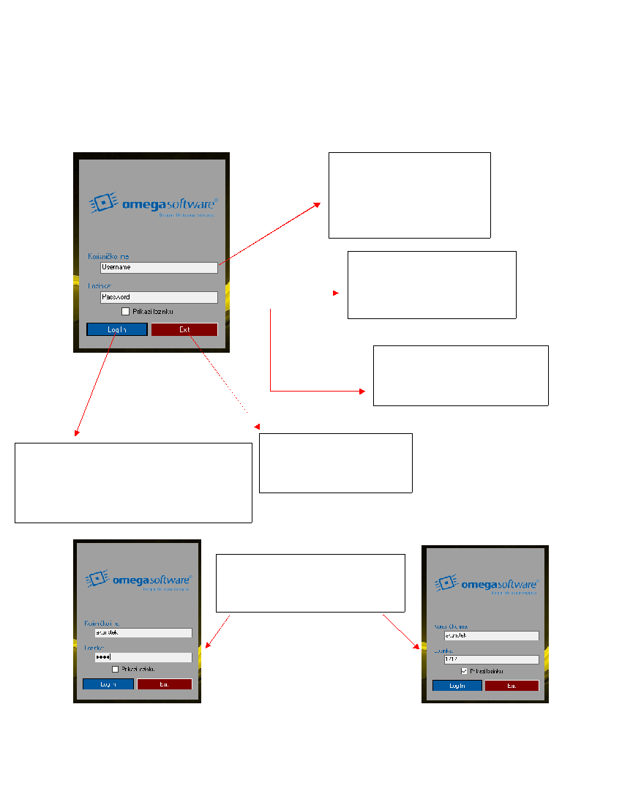

4
3.0.
Obrazac za prijavu
ko je spoj izmeðu baze podataka i aplikacije uspješan, otvara nam se obrazac za prijavu U obrazac za
prijavu zaposlenici odnosno korisnici aplikacije unose svoje korisnièke podatke
Slika 3. Sakrivena lozinka Slika 4. Prikazana lozinka
U polje za unos korisnièkog imena,
korisnik unosi korisnièko ime koje je
dobio od strane administratora.
Primjer: akunstek, mjosipovic...
U polje za unos lozinke, korisnik unosi
lozinku koju je dobio od strane
administratora.
Oznaka prikaži lozinku služi za
otrkivanje/skrivanje unosa u polju za
unos lozinke (Slika 3. i Slika 4.)
Pritiskom na dugme “Log In” provjerava se unos
korisnièkog imena i lozinke ko je unos dobar, otvara
se glavni prozor aplikacije(Slika 7.). Ako je unos krivi
javlja se poruka s greškom (Slika 6 )
Pritiskom na dugme “Exit” otvara
se prozor s upitom provjere.
(Slika 5.)
Pritiskom na oznaku prikaži lozinku,
korisnik prikazuje lozinku koju unosi (Slika
4.)